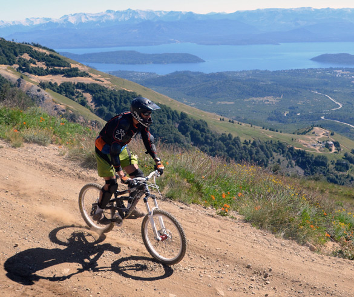
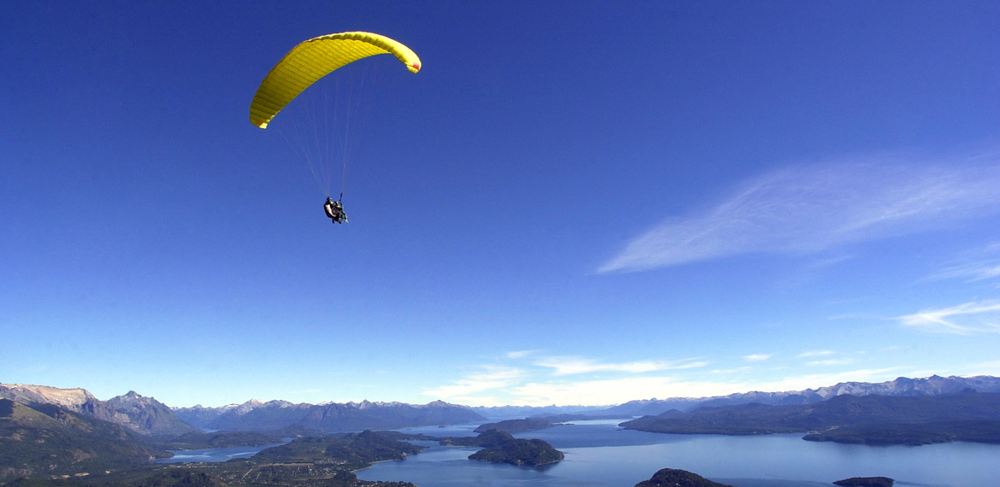

Aventura
Viví la aventura
Bariloche te propone un sinfín de actividades, por eso es la capital nacional del turismo aventura. Viví la aventura en los escenarios más variados, de la forma que más te guste. ¡El mayor desafío será elegir qué hacer primero!
Cabalgatas
Cabalgá hacia la aventura
Cabalgar es una experiencia colmada de sensaciones: transitar diferentes terrenos, sea al trote o al galope, oír el relajante sonido de los cascos al resonar en las piedras o en los arroyos y sentir una conexión única con un animal noble e incondicional.
Las cabalgatas pueden ser cortas, ideales para familias con niños, o travesías de varios días que te llevarán hasta Chile, pernoctando en cálidos refugios donde el sueño se vuelve más reparador que nunca. El recorrido estará guiado por baqueanos expertos, sabios conocedores del lugar.
La Patagonia andina se caracteriza por cambiar de topografía y vegetación en un área de pocos kilómetros. Un solo paseo a caballo puede implicar, por lo tanto, recorrer una asombrosa variedad de paisajes, flora y fauna.
Se pueden hacer recorridos por la estepa, parando en excepcionales puntos panorámicos. Durante la excursión, te podés cruzar con variados ejemplares de la fauna local como liebres, ciervos y guanacos, mientras observás el vuelo de majestuosos cóndores y espectaculares águilas.
También podrás descubrir la magia que vive en las fascinantes pinturas rupestres de las antiguas cuevas del cerro Leones, a 20 km de la ciudad y conocer, a través de los relatos del guía, las costumbres de los primeros habitantes del lugar.
Otra posibilidad es recorrer los senderos entre montañas, vadeando ríos, atravesando valles y disfrutando del sugestivo silencio que ofrecen los añosos bosques de cipreses y coihues en el corazón del parque nacional Nahuel Huapi. También podés descubrir los misteriosos lagos y arroyos con sus cascadas escondidas.

La experiencia además te lleva a recorrer los sabores de la gastronomía local. En un alto en el camino podrás saborear el típico cordero o asado patagónico, mate con tortas fritas y otras delicias. También tendrás la oportunidad de conversar con los pobladores del lugar, conociendo sus vidas, sus costumbres y sus secretos ancestrales: el uso medicinal que le dan a las plantas, las más antiguas técnicas de tejido en telar, y mucho más.
Escalada
A la altura de tus sueños
Se considera escalada a todo ascenso que, por ser difícil o imposible de realizar sólo con las extremidades inferiores (pies y piernas), requiere utilizar también las extremidades superiores (brazos y manos). Se realiza sobre paredes de pendiente muy pronunciada, por lo que es muy importante la fuerza, tanto física como mental.
Durante la escalada se asciende a alturas de un peligro considerable. Por eso, para una mayor seguridad, aconsejamos buscar el asesoramiento de un guía profesional. También sugerimos no realizar escaladas individualmente y utilizar el equipo técnico apropiado (arnés de cintura, mosquetones de seguridad, casco y calzado específico de gran adherencia).
Cerro Catedral - Refugio Frey
La zona de escalada del cerro Catedral es una de las más grandes del continente. Enmarcadas en un paisaje excepcional, las agujas de un excelente granito rojo, con fisuras, placas y agujeros, hacen de sus torres de granito un paraíso natural para todos los escaladores del mundo. El lugar se encuentra a 3/4 de hora de caminata desde la base del cerro.
| Ficha Tecnica |
| Recorrido |
50 a 200 metros (2 a 6 largos). |
| Duración |
2 a 6 días. |
| Dificultad |
Media / Alta. |
Escalada deportiva en cerro Ventana
El lugar se encuentra a 10 kilómetros de Bariloche y ofrece una hermosa vista del lago Gutiérrez y del cerro Catedral.
| Ficha Tecnica |
| Recorrido |
Rutas deportivas de 15 a 30 metros. |
| Duración |
Medio día / Día completo. |
| Dificultad |
Media / Alta. |
Escalada en Piedras Blancas (cerro Otto)
Se encuentra a solo 6 kilómetros de Bariloche y se puede escalar durante todo el año, aunque la fecha ideal es en verano. Ofrece una bellísima vista de la ciudad.
| Ficha Tecnica |
| Recorrido |
Rutas deportivas de hasta 60 metros. |
| Duración |
Medio día / Día completo. |
| Dificultad |
Media / Alta. |
Escalada en hielo en cerro Tronador
Es la montaña más atractiva para escalar. El recorrido empieza con una caminata hasta el refugio Otto Meiling, donde se puede pernoctar. No te podés perder el placer de cenar a la luz de las velas, ante el imponente paisaje del glaciar y las montañas. De allí se parte de madrugada, para poder hacer cumbre antes de la media mañana.
| Ficha Tecnica |
| Recorrido |
En hielo y nieve. |
| Duración |
2-3 días. |
| Dificultad |
Media / Alta. |
Mountain Bike
Desafía la Montaña
El parque nacional Nahuel Huapi posee una geografía muy rica y variada, que lo convierte en el escenario ideal para la práctica de ciclismo de montaña.


Podés llegar en bicicleta a lugares magníficos, ejercitar tu cuerpo y hasta desafiar a la montaña en las bajadas veloces. Como las opciones de itinerarios son muchas, las empresas que ofrecen estos paseos te brindarán el asesoramiento necesario, con guías especializados para armarte un recorrido ideal y acorde a tus aspiraciones.
Las salidas podrán ser guiadas por ciclistas expertos, conocedores del terreno. El lugar más buscado para practicar este deporte es el Bike Park del Cerro Catedral. Otras opciones son el sendero que une la base del cerro con el Lago Gutiérrez (especialmente diseñado para práctica de descenso), así como los diferentes senderos que atraviesan el bosque y la estepa.
Bariloche es, además, mundialmente conocida como sede y organizadora de competencias de alto nivel, como por ejemplo el campeonato de descenso del Open Shimano, que tuvo lugar en el 2014 y el 2015 en el cerro Catedral.
Así como durante el invierno la montaña es el punto de encuentro para todos los esquiadores, en verano el Bike Park abre sus puertas a la aventura y la emoción, para que ciclistas de todo el mundo disfruten de una amplia variedad de circuitos con niveles de dificultad apropiados a cada etapa del aprendizaje.

Principales circuitos de Mountain Bike en Bariloche:
Lago Gutiérrez
Desde Villa Los Coihues se puede emprender un recorrido por senderos hasta Cascada de los Duendes y luego hacia Virgen de las Nieves. Se trata de un recorrido de baja dificultad que insume aproximadamente tres horas.
La travesía comienza en el lago Gutiérrez recorriendo algunos caminos vecinales hasta llegar a una seccional de la Administración de Parques Nacionales, donde comienza a internarse en el bosque hasta la Cascada de los Duendes. Se puede regresar bordeando el arroyo Gutiérrez por un camino interno que conduce hacia la zona de Virgen de las Nieves, a través de un bellísimo bosque de coihues y cipreses.
Colonia Suiza
Ir y volver en bicicleta desde el centro de la ciudad hasta esta aldea de antiguos pobladores, puede ser una excursión de un día completo. Colonia Suiza es un pequeño poblado con mucha historia, donde aún se conservan las típicas casas de los antiguos inmigrantes europeos que se establecieron en la zona durante el siglo XIX. El curanto al hoyo es una de las atracciones más importantes, se cocina en una fosa donde piedras calientes y hojas de nalca se encargan de darle un sabor autóctono e indescriptible. Otro importante atractivo es la feria artesanal, que abre al público los días miércoles y domingos.
Isla Victoria
Una opción diferente es llegar hasta Puerto Pañuelo, frente al Hotel Llao Llao y embarcarse en el catamarán para ir a la isla. Al llegar a Puerto Anchorena se bajan las bicicletas y comienza la pedaleada a través de bosques exóticos y, luego, por un gigantesco bosque nativo que bordea la costa noreste. En destino te espera la impecable playa de arena de Piedras Blancas, para disfrutar de un merecido descanso. Se trata de un recorrido de 8 kilómetros, con algunas subidas, que permite descubrir la flora y fauna del lugar, además de la historia, visitando casas que datan de principios del siglo pasado. La Isla Victoria impacta por su exclusivo paisaje, su exuberante flora y su peculiar fauna. Durante el trayecto es posible cruzarse con algún ciervo colorado.
Ñirihuau
Saliendo de Bariloche hacia el aeropuerto, por el valle del Ñirihuau, la estepa nos ofrece un paisaje diferente para recorrer en bicicleta. Se puede regresar por arroyo del medio a la avenida de circunvalación, pasando por una condorera en Las Buitreras. La época recomendada para esta travesía de dificultad media a baja es de octubre a mayo.
Parapente
Entre amigos. Entre nubes.
Así como Bariloche ofrece experiencias inigualables en la tierra, también las ofrece en el cielo. Tendrás una vivencia única e intensa al surcar las nubes cordilleranas en un parapente biplaza, siempre con la compañía de un instructor altamente experimentado.
¿Cuáles son los requisitos para realizar parapente?
Para llevar a cabo esta actividad no hace falta experiencia previa ni entrenamiento físico alguno, solamente estar en buenas condiciones de salud y con ganas de volar. Cada vuelo es distinto en duración, altura y recorrido. Los lugares de despegue también varían, según la época del año y las condiciones meteorológicas.
Se realizan vuelos de bautismo, que cuentan con una clase introductoria al vuelo en parapente, de manera cómoda y segura. El circuito más frecuente es en el cerro Otto.
En cuanto a la indumentaria se requiere abrigo acorde y calzado deportivo firme. Durante el vuelo se utilizan casco y guantes, además de un abrigo extra.

¿Cuánto duran los vuelos?
La duración del vuelo depende de los vientos y las condiciones del aire. Normalmente, todo el circuito dura una hora y media. Sin embargo, al tratarse de una experiencia que depende de las condiciones meteorológicas, son comunes las oscilaciones en la duración.